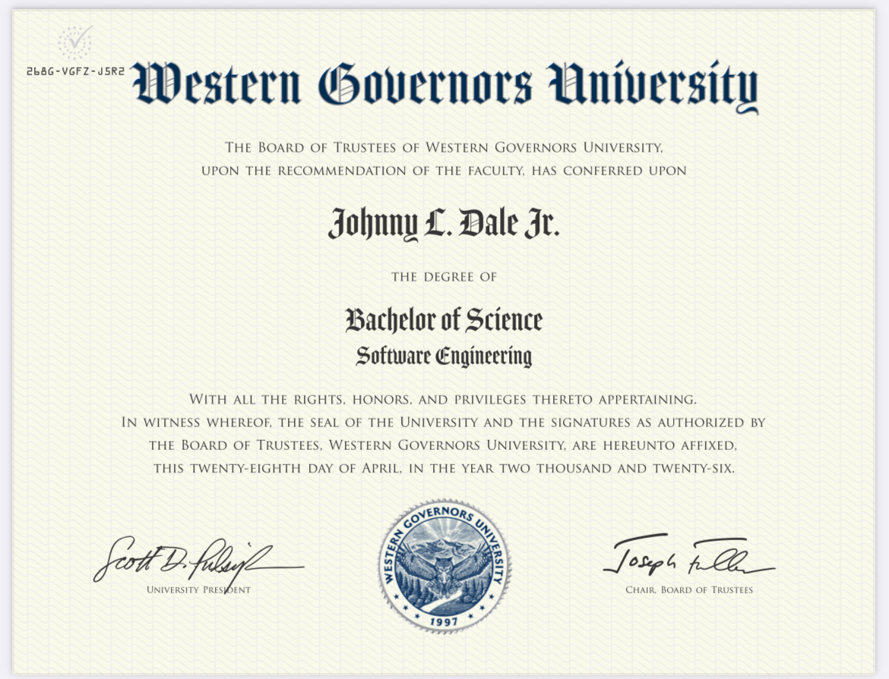
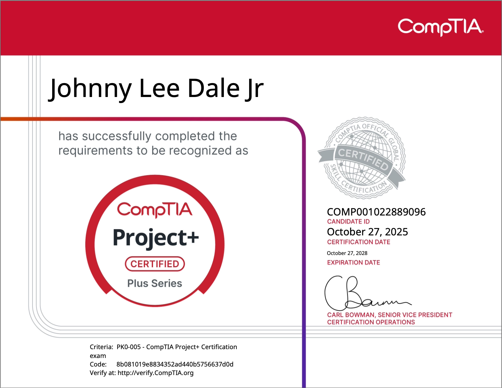
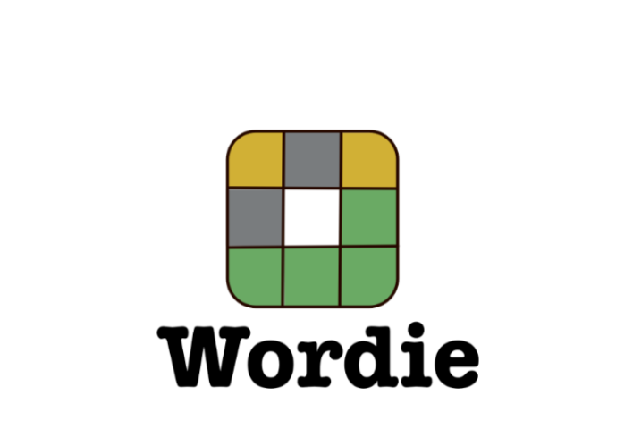

Hello, I'm
Combining nearly 30 years of hands-on technical experience with a BS in Software Engineering to build innovative solutions at the intersection of hardware and software.
I'm a detail-oriented Software Engineer with nearly 30 years of industrial technical experience and a newly earned BS in Software Engineering from Western Governors University (March 2026). What sets me apart is the rare combination of deep hands-on electrical and mechanical knowledge with formal software development training — I understand not just how code runs, but how the physical systems it controls actually work.
My career began on the factory floor troubleshooting PLCs, motor controls, robotics, and SCADA systems, and has evolved into building modern full-stack applications with React, Angular, Python, PHP, and Java. I've programmed Allen-Bradley and Siemens PLCs, maintained high-speed bottling and packaging lines, and more recently developed web apps with Spring Boot backends, deployed with Docker, and integrated with third-party APIs. That level of experience — from ladder logic to REST APIs — lets me solve problems at every level of the stack.
I'm passionate about building software that makes a real impact, whether that means optimizing industrial processes, creating intuitive user interfaces, or connecting legacy systems to modern cloud platforms. Every project I take on benefits from the perspective of someone who has seen technology from both sides: the hardware that makes things move and the code that makes them smart.
Performing maintenance and repairs on production equipment in a beverage manufacturing facility. Troubleshooting mechanical and electrical systems, maintaining conveyors, packaging machinery, and processing equipment to ensure continuous production operations.
Troubleshot, repaired, and installed pneumatic and hydraulic systems, control valves, centrifugal and positive displacement pumps. Troubleshot and repaired AC/DC electrical systems, read schematics, and used electrical testing equipment. Used preventative maintenance systems and work order tracking.
Paused career to turn full focus to completing B.S. in Software Engineering at Western Governors University.
In this position I was responsible for ensuring the runtime of machinery used in a continuous process that created and recycled monomer, which produced acrylic sheet, a milling system, and all components to silo storage / pneumatic conveyance. These objectives required me to troubleshoot and make necessary mechanical, electrical, or hydraulic repairs to proprietary equipment. While using tools such as: volt meters, amp meters, plc manipulation (rslogix 500, Allen Bradley) and being able to run ladder logic programs. Other duties included precision motor and pump installation/alignment, hot oil system rebuilding, cylinder maintenance, and record keeping.
In this role I was responsible for responding to technical trouble calls as well as take part in our department's preventative maintenance and predictive maintenance programs. This role required me to troubleshoot and make repairs to production equipment used in the processing and bagging of frozen vegetables for the frozen foods industry. Products packaged included the frozen brands of Swanson, & Great Value. The equipment that I serviced in this role included; vertical bagging machines, empty case erectors, bucket elevators, scale sorters, fastback conveyors, hydraulic tote dumps, & check weighs. All PM work and trouble calls where logged into JDE, our work order and parts tracking system.
In this role I was responsible for responding to technical challenges and issues that would otherwise hinder the production process. This role requires me to troubleshoot and make repairs to production equipment used in the manufacturing and testing of electronic solenoids for the automotive industry. The equipment includes; Robots, conveyors, hydraulic and pneumatic presses, servomotors, servo drives, injection mold machines, and various other rslogix 5000 driven PLC applications. Robots include various Staubli and Epson models. My duties require me to log work performed in a Computerized Maintenance Management System (CMMS) and checkout parts needed for repairs using a parts management software system.
In my current role I am responsible for responding to technical challenges and issues that would otherwise hinder the production process. This role requires me to troubleshoot and make mechanical and electrical repairs to equipment used to transport raw milk to storage tanks, pasteurization and homogenization processes, bottle milk and other liquid products, case bottled liquid products, stack cases of liquid product, transport, palletize, and shrink wrap stacked cases of liquid product. I am also responsible for providing technical support to our blow mold department where resin is pneumatically conveyed from storage silos and extruded and molded into gallon or half gallon jugs. Some of the equipment I make repairs to includes; ink stream daters, product labelers, case washers, casing machines, case stackers, in floor case chain conveyors, centrifugal pumps, conveyance blowers, stack pushers etc.
As a Plant Engineering Technician, my responsibilities included; responding to sort process trouble calls, making mechanical and electrical repairs to conveyors and sortation equipment, performing preventive maintenance on equipment that was not scheduled for use, and document all repairs made along with parts used in such repairs. In this position, minimizing downtime was considered utmost priority, and most repairs, if possible, were attempted within a two-hour window, which occurred between sorts. The equipment included; belt and chain driven conveyors, shoe sorters, paddle diverters, monorail conveyors, power industrial trucks, Taylor Dunn personal carrier carts, and various other conveyor-based applications to accomplish the loading and unloading of trailers.
I responded to calls when line problems exist. I also participated in direct troubleshooting activities in the event of equipment failures. I made necessary adjustments and repairs to electrical and mechanical components of production equipment such as; Bosch CM5 wrap machines, Shanklin Omni wrappers, and Shanklin heat tunnels to ensure the quality of our final product. I was also responsible for making electrical and mechanical repairs to various types of conveyors used to transport materials for pre-production and the final products for distribution. I made efforts to minimize unscheduled downtime by performing routine preventive maintenance on equipment during scheduled downtime, and performed changeovers on aforementioned machinery to enable the production of various sized packages of DVD & Blu-Ray products.
In this function my role was to help oversee the overall upkeep of the Southland Gaming and Racing Facility. While delegating duties to a staff of ten, I was responsible for upholding the Universal service standards and implementing these standards among group members. I was also active in maintaining a team atmosphere, while ensuring the completion of all assigned task.
I responded to calls of an assigned production area when line problems exist. I also participated in direct troubleshooting activities in the event of equipment failures. I made necessary adjustments and repairs to electrical and mechanical components of production equipment such as; Bosch blow wrap machines, Jones carton packers, Acma 711 & 731 model wrappers, Mazzoni mixers, plodders, and presses to ensure the quality of our final product. I also made efforts to minimize equipment downtime by performing routine preventive maintenance on equipment that was not scheduled for use during the daily run, and perform changeovers on carton packers, wrappers, and stamping machines to enable the production of various soap products.
I performed installs and disconnects, adhering to Source procedures and safe work practices, NEC and NESC requirements, and local ordinances in order to provide requested services such as; cable TV, digital telephone, and/or high speed internet service. I also pre-wired single unit dwellings in order to provide "ready hook-up" capabilities.
My Duties Included the maintenance and repair of several different types of DC electric Material Handling Equipment such as; man-ups, reach trucks, sit-downs, automatic pallet jacks, walkie riders, and personal carrier carts. In maintaining this equipment, I was required to make repairs on or replace electrical components such as; traction control cards, DC Motors, SCRs, N/O switches, N/C switches, Main Interface Boards, contactors, relays, and solenoid switches etc.. I also performed hot work such as; welding and cutting metal. My duties also included the up keep and repair of computer peripherals used in association with production standards such as; PDAs, tethered/RF scanners, and handheld computer docking stations.
My Duties Included trouble shooting, repair, and preventive maintenance of electro pneumatic controlled T/C, and Accuglide conveyors of a Bushman conveyor system. My duties also included independently troubleshooting mechanical and electrical failures to a component level of electromechanical equipment such as; Signode case strappers, tape machines, trash compactor, & card board bailer etc. In this position I also responded to emergency trouble calls, provided equipment operator information concerning any equipment modifications that may affect the operator's normal routine, logged all issues found, and documented corrective actions taken to repair such issues using MP2 database program.
Completed B.S. in Software Engineering. Built skills in full-stack web development, data structures, algorithms, and modern programming practices through hands-on projects and coursework.
Building software projects as I continue to grow my skills.
Completed degree with focus on software development, systems design, and modern programming practices.

Extensive experience with PLC programming (Rslogix 500, Rslogix 5000, Allen Bradley), robotics (Staubli, Epson), electrical systems, hydraulics, pneumatics, MIG/TIG welding, and industrial maintenance across multiple industries.


A browser-based word puzzle game inspired by the New York Times Wordle. Built as a passion project featuring a clean, intuitive interface where players guess five-letter words with color-coded feedback. The backend handles word validation and game state management, while the frontend delivers smooth, responsive gameplay.
An interactive single-page web application built with Angular for WGU's D280 JavaScript Programming course. Features an SVG world map that dynamically pulls and displays detailed country data from the World Bank API, including region, capital, income level, population, and country size in square kilometers. Clicking a country triggers event binding that transmits the country code to the parent component, displaying metrics in a clean two-column layout.
A secure, database-backed Android mobile application built for WGU's D308 Mobile Application Development course. Triplet is a vacation planning app featuring clean navigation, an intuitive user interface, and object-oriented design. Users can create, manage, and track their vacation itineraries with data persistence and a polished mobile experience.
I'm always open to discussing new opportunities, creative projects, or ways to bring innovative solutions to your team. Let's connect!